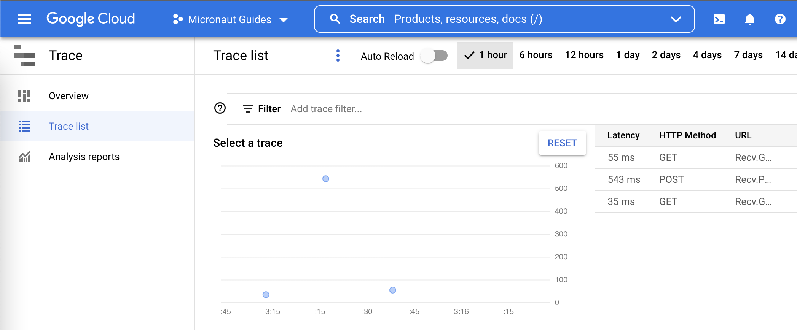
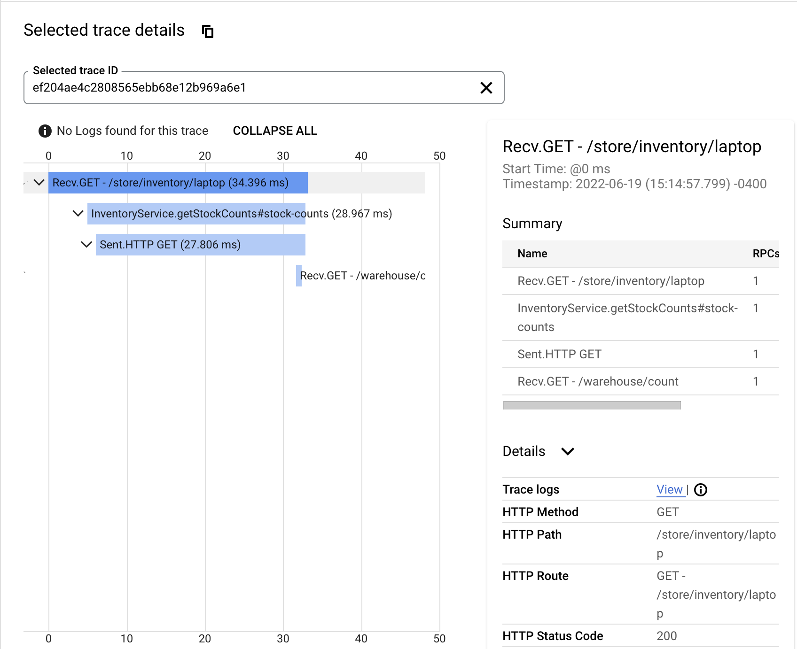
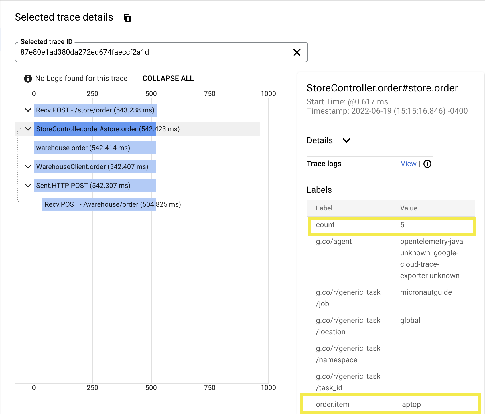
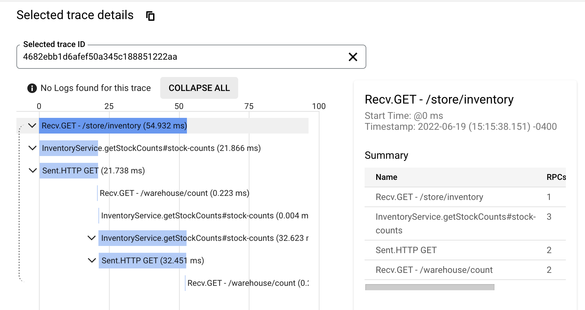

OpenTelemetry Tracing with Google Cloud Trace and the Micronaut Framework
Use Google Cloud Trace to investigate the behavior of your Micronaut applications.
On this guide
In this section
Getting Started
In this guide, we will create a Micronaut application written in Groovy.
In this guide, you will discover how simple it is to add tracing to a Micronaut application.
Tracing allows you to track service requests in a single application or a distributed one. Trace data shows the path, time spent in each section (called a span), and other information collected along the way. Tracing gives you observability into what is causing bottlenecks and failures.
What you will need
To complete this guide, you will need the following:
-
Some time on your hands
-
A decent text editor or IDE (e.g. IntelliJ IDEA)
-
JDK 21 or greater installed with
JAVA_HOMEconfigured appropriately -
A Google Cloud Platform (GCP) account and a GCP project.
Costs
|
Warning
|
This guide uses paid services; you may need to enable Billing in Google Cloud to complete some steps in this guide. |
Google Cloud Platform
Signup for the Google Cloud Platform
Cloud SDK
Install the Cloud SDK CLI for your operating system.
Cloud SDK includes the gcloud command-line tool. Run the init command in your terminal:
gcloud initLog in to your Google Cloud Platform:
gcloud auth loginGoogle Cloud Platform Project
Create a new project with a unique name (replace xxxxxx with alphanumeric characters of your choice):
gcloud projects create micronaut-guides-xxxxxx|
Note
|
In GCP, project ids are globally unique, so the id you used above is the one you should use in the rest of this guide. |
Change your project:
gcloud config set project micronaut-guides-xxxxxxIf you forget the project id, you can list all projects:
gcloud projects listSolution
We recommend that you follow the instructions in the next sections and create the application step by step. However, you can go right to the completed example.
-
Download and unzip the source
Writing the Application
Create an application using the Micronaut Command Line Interface or with Micronaut Launch.
mn create-app example.micronaut.micronautguide \
--features=tracing-opentelemetry-gcp,http-client \
--build=gradle \
--lang=groovy \
--test=spock|
Note
|
If you don’t specify the --build argument, Gradle with the Kotlin DSL is used as the build tool. If you don’t specify the --lang argument, Java is used as the language.If you don’t specify the --test argument, JUnit is used for Java and Kotlin, and Spock is used for Groovy.
|
The previous command creates a Micronaut application with the default package example.micronaut in a directory named micronautguide.
If you use Micronaut Launch, select Micronaut Application as application type and add tracing-opentelemetry-gcp, and http-client features.
|
Note
|
If you have an existing Micronaut application and want to add the functionality described here, you can view the dependency and configuration changes from the specified features, and apply those changes to your application. |
OpenTelemetry
Micronaut Framework uses OpenTelemetry to generate and export tracing data.
OpenTelemetry provides two annotations: one to create a span and another to include additional information in the span.
- @WithSpan
-
Used on methods to create a new span; defaults to the method name, but a unique name may be assigned instead.
- @SpanAttribute
-
Used on method parameters to assign a value to a span; defaults to the parameter name, but a unique name may be assigned instead.
@WithSpan and @SpanAttribute can be used only on non-private methods.
If these annotations are not enough, or if you want to add tracing to a private method, Micronaut Framework’s tracing integration registers a io.opentelemetry.api.trace.Tracer bean, which exposes the OpenTelemetry API and can be dependency-injected as needed.
|
Note
|
The following `io.micronaut.tracing.annotation`s are available if you prefer to use them or if you are working on an existing Micronaut application that already uses them.
|
Inventory Service
Store Controller
This class demonstrates use of the io.micronaut.tracing.annotation instead of the OpenTelemetry annotations.
|
Note
|
If you have the following dependency declared, all HTTP server methods (those annotated with build.gradle |
Warehouse Client
You can also mix OpenTelemetry and Micronaut Tracing annotations in the same class.
|
Note
|
If you have the following dependency declared, all HTTP client methods (those annotated with build.gradle |
Warehouse Controller
The WarehouseController class represents an external service that will be called by WarehouseClient.
Tracer Configuration
If you used Micronaut CLI or Launch to create your application, the OpenTelemetry exporter will automatically be added to your application.properties configuration.
otel.traces.exporter=google_cloud_traceRun the Application
The application can be deployed to Google Cloud Run, Cloud Function, Cloud Compute, or App Engine.
Traces can be sent to Google Cloud Trace from outside Google Cloud.
This allows us to run the application locally and see the traces in Google Cloud Trace.
To run the application, use the ./gradlew run command, which starts the application on port 8080.
|
Note
|
You might get this error message when running your application: If you are developing locally you can do: However, it is strongly recommended that you set up a service account. Follow the instructions in the link above and Micronaut GCP setup instructions for creating and configuring the service account. |
Traces
Open the GCP Tracing Console.

If the data is not displayed, give it a minute. It takes a few seconds for the traces to show up in the console.
Get Item Counts
curl http://localhost:8080/store/inventory/laptop
Each span is represented by a blue bar.
Order Item
curl -X "POST" "http://localhost:8080/store/order" \
-H 'Content-Type: application/json; charset=utf-8' \
-d $'{"item":"laptop", "count":5}'
Selecting a different span will show you the labels (a.k.a. attributes/tags) and other details of the span.
Get Inventory
curl http://localhost:8080/store/inventory
Looking at the trace, we can conclude that retrieving the items sequentially might not be the best design choice.
Cleaning Up
After you’ve finished this guide, you can clean up the resources you created on Google Cloud Platform so you won’t be billed for them in the future. The following sections describe how to delete or turn off these resources.
Deleting the project
The easiest way to eliminate billing is to delete the project you created for the tutorial.
|
Warning
|
Deleting a project has the following consequences:
|
Via the CLI
To delete the project using the Cloud SDK, run the following command, replacing YOUR_PROJECT_ID with the project ID:
gcloud projects delete YOUR_PROJECT_IDVia the Cloud Platform Console
In the Cloud Platform Console, go to the Projects page.
In the project list, select the project you want to delete and click Delete project. After selecting the checkbox next to the project name, click Delete project
In the dialog, type the project ID, and then click Shut down to delete the project.
Deleting or turning off specific resources
You can individually delete or turn off some of the resources that you created during the tutorial.
Next Steps
Read more about Micronaut Tracing.
Read more about Micronaut GCP integration.
License
|
Note
|
All guides are released with an Apache License 2.0 for the code and a Creative Commons Attribution 4.0 license for the writing and media (images). |